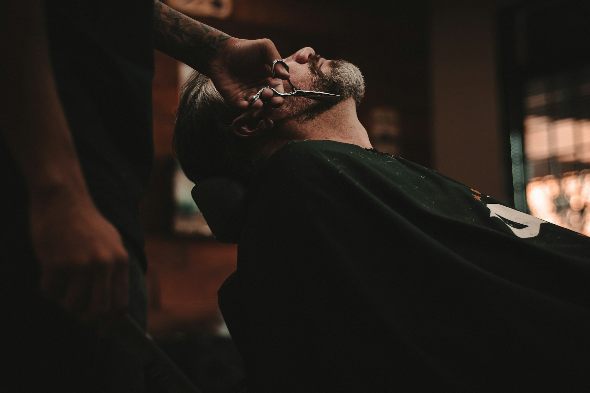

Corte de adultos
Corte de cabello para adultos con Pipa.

EL OFICIO DE HACERTE SENTIR BIEN
Manos expertas. Cortes con carácter.
Un momento que es solamente tuyo.
01 / NUESTROS SERVICIOS
Desde un clásico de siempre hasta un nuevo comienzo. Elegí la experiencia que va con vos.
Corte de cabello para adultos con Pipa.
Corte de cabello para niños con Hector.
Lunes a viernes de 10 a 18 · Tarifas a consultar en el local.
 EL DETALLE HACE LA DIFERENCIA.
EL DETALLE HACE LA DIFERENCIA.02 / EL ESTUDIO
Un espacio pensado para bajar un cambio. Donde cada corte empieza con una conversación y termina con un estilo que se siente propio.
Esta es nuestra idea de barbería: atención personal, técnica y respeto por los detalles. Sin apuro.
Sentate. Nosotros nos ocupamos. ↗03 / PUERTAS ADENTRO
La atmósfera también es parte del ritual.
04 / TU PRÓXIMO TURNO
Elegí tu corte y consultá los horarios disponibles en Setmore.
Pipa · adultos
Hector · niños
Lunes a viernes de 10 a 18, hora de Buenos Aires.
Completá la reserva en Setmore y esperá su confirmación. Para el corte de un niño, dejá los datos de contacto del adulto responsable.
ANTES DE VENIR
La agenda de Setmore muestra los horarios disponibles para corte de adultos con Pipa y corte de niños con Hector. Completá tus datos y finalizá la reserva allí. El turno queda registrado cuando Setmore confirma la cita. No necesitás crear una cuenta.
El concepto incluye una conversación antes del corte para encontrar una propuesta que acompañe tu pelo, tu rutina y tu estilo.
Atendemos de lunes a viernes de 10 a 18, hora de Buenos Aires. La dirección se incorporará cuando se confirme.